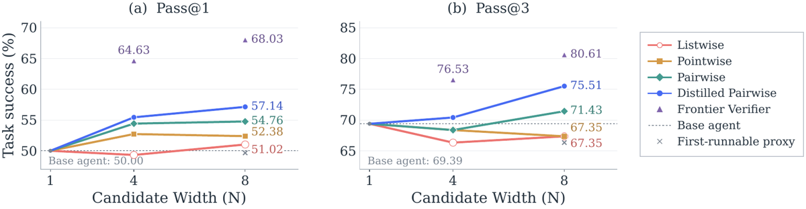
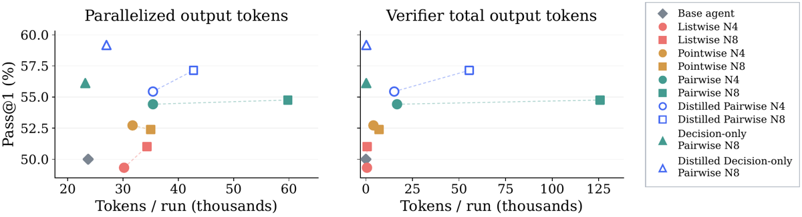
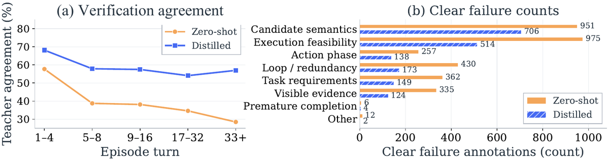

TL;DR — Entre la décision du modèle et l'exécution par le harness, on échantillonne N actions candidates à partir du même historique et un vérifieur LLM en choisit une ; générateur et harness restent inchangés. Pas de RL, pas de policy entraînée : du test-time compute placé à la frontière modèle↔harness, plus une distillation LoRA du vérifieur.
Claim principal, formulé précisément — Avec un générateur TMAX-9B gelé sur TerminalBench-Lite (98 tâches, 3 runs/tâche), (i) échantillonner plus d'actions sans vérifieur n'apporte rien (first-runnable à N=8 : 49.66 % Pass@1 vs 50.00 % pour le base agent, donc en dessous) ; (ii) un vérifieur frontier (GPT-5.6 Sol, listwise) porte Pass@1 à 68.03 % à N=8 ; (iii) en self-verification (même TMAX-9B générateur et vérifieur), le pairwise domine les mécanismes évalués (54.76 % vs 52.38 % pointwise, 51.02 % listwise) ; (iv) la distillation LoRA des réponses du teacher porte le pairwise à 57.14 % ; (v) la composition avec Best-of-T ou Sequential Refine atteint un meilleur Pass@1 à coût token estimé plus faible que davantage de trajectoires seules [§1, §4, Tab. plot-action-results].
⚠️ Catégorie : ni ENV (aucun environnement construit, les benchmarks sont repris tels quels), ni ALGO au sens RL (aucune policy optimisée). Je le classe ALGO faute de mieux : la contribution est un algorithme d'inférence (tournoi pairwise de sélection d'action) + une distillation SFT du sélecteur. Pour la synthèse : à mettre dans la liste « n'entraîne pas de policy ».
⚠️ Nuance centrale, à ne pas perdre : le dispositif n'est pas un gate mais un sélecteur. Verify « always returns one of the proposed candidates » [§2.1]. Il ne peut jamais refuser, ni demander une regénération, ni s'abstenir. Voir §2 et §9.
network-log-normalization, okhttp-trailers-crash) pour erreurs de service sandbox → 98 tâches [App. evaluation].Le harness est inchangé. La modification tient dans le wrapper d'appel modèle [§2, pseudocode] :
# harness loop (inchangé)
while not done:
response = await model.generate(messages)
actions, done = parse(response)
obs = await env.execute(actions)
messages = update(messages, response, obs)
# wrapper (Mid-Harness)
async def generate(messages):
- return await llm.generate(messages)
+ candidates = await llm.generate(messages, n=N)
+ return await verify(llm, messages, candidates)
Formellement : $\mathcal{A}t=(a_t^1,\dots,a_t^N)$, $a_t^i\sim\pi(\cdot\mid h_t)$, $a_t^\star=\mathrm{Verify}\psi(h_t,\mathcal{A}_t)\in\mathcal{A}_t$ ; les candidats non retenus sont jetés, le jeu suivant est généré depuis l'historique mis à jour [§2.1].
{goal}), la section historique ({history_section}), l'état terminal courant ({state}) et les actions candidates. Il ne voit PAS le reasoning qui a produit ces candidats (« The verifier receives the task, observed history, and candidate actions, but not the reasoning generated for those candidates », note de bas de page §2.1). Contexte 61 440 tokens, sortie max 2 048, thinking off, temperature 0 [Tab. settings].Trois mécanismes comparés, tous génératifs (reasoning puis score/choix), sauf la variante decision-only [§2.2] :
| Mécanisme | Appels vérifieur à N=8 | Sortie |
|---|---|---|
| Listwise | 1 | {"reason": "<=30 words", "best": "<letter>"} |
| Pointwise | 8 | {"reason","predicted_next_state","score": 0-10} |
| Pairwise (défaut) | 22-25 (ring + 4 pivots) | {"reasoning","scores":{"A","B"},"winner":"A|B|TIE"} |
| Pairwise exhaustif (non utilisé à N=8) | 28 | — |
| Pairwise decision-only | 22-25 | un seul token A/B, scoré par logprob |
C'est la partie la plus instructive pour un env. Toutes les clauses de repli vont dans le même sens : ne jamais bloquer, toujours exécuter quelque chose [App. protocols].
Elle ne rejette jamais. Il n'y a ni veto, ni regénération, ni abstention, ni boucle de retour vers le générateur. Le mécanisme choisit toujours un élément de $\mathcal{A}_t$ [§2.1] et, en cas de panne, retombe sur le premier candidat [App. protocols]. Conséquence pour le budget de tours : max 64 steps, identique pour base agent et Mid-Harness [Tab. settings] ; la vérification ne consomme aucun tour. Elle consomme des tokens et du wall-clock (d'où le ×3 de timeout). Aucune expérience n'évalue un variant « rejeter tous les candidats et réessayer ».
Tâche React/TypeScript, step 28, Jest échoue sur TS6137 pour un test important @types/user, interdiction de modifier les fichiers de test [App. qualitative-examples-raw] :
Candidat 0 (non choisi) : $ cat > /app/tsconfig.test.json << 'EOF' # crée une config jamais branchée à Jest
Candidat 2 (non choisi) : diagnostics: { exclude: ['TS6137'] } # clé ts-jest invalide
Candidat 3 (CHOISI) : diagnostics: { ignoreCodes: [6137] } # API ts-jest correcte
Réponse du vérifieur (scores 3 vs 9, préfère le candidat 3), recopiée :
« 1) Requirement: The test suite fails with TS6137 because
@types/useris interpreted as a type declaration namespace. The agent cannot modify test files, so the fix must be in the Jest/ts-jest configuration… 3) Candidate A attempts to usediagnostics: { exclude: ['TS6137'] }. This is not a valid ts-jest configuration property… 4) Candidate B usesdiagnostics: { ignoreCodes: [6137] }. This is the correct, documented ts-jest API… »
Résultat : 3 suites / 16 tests passent, évaluateur externe 17/17, reward 1. Base agent 0/3 runs réussis, zero-shot Mid-Harness 3/3 [App. qualitative-examples].
Deux objets distincts, à ne pas confondre : (a) le reward d'évaluation de la tâche, (b) le vérifieur d'action, qui est l'objet d'étude.
| Vérifieur | Score MAE | Pairwise agreement | Verification agreement |
|---|---|---|---|
| Zero-shot | 2.59 | 59.01 % | 38.52 % |
| Distillé | 1.05 | 74.58 % | 57.79 % |
pairwise agreement = fraction de comparaisons où les préférences A/B/TIE coïncident ; verification agreement = fraction d'états où les deux modèles désignent le même top-candidat par comptage de wins sur le ring (⚠️ comptage non pondéré, différent de l'agrégation margin-weighted utilisée online — l'écart entre diagnostic offline et comportement online est donc non nul et non quantifié) [App. matched-diagnostics].
- Dégradation avec l'horizon : verification agreement 68.13 % aux tours 1-4, 54.07 % aux tours 17-32 [§5.2, Fig. verifier-diagnostics(a), sur 1 355 états = 83.4 %]. Bins 1-4 / 5-8 / 9-16 / 17-32 / 33+ contenant 182 / 178 / 388 / 442 / 165 états ; les quatre premiers bins couvrent 21 tâches, le dernier seulement 8 (⚠️ pooling sans pondération macro-tâche).
- Plafond de bruit : absent. Aucune mesure de reproductibilité du vérifieur (accord du teacher avec lui-même), alors que c'est l'échelle qui rendrait lisibles les 59 %/74 % d'accord. Accord juge↔humain : jamais mesuré. Accord inter-juges : jamais mesuré. Les trois quantités manquent.
- Robustesse / attaque : ⚠️ le vérifieur n'a jamais été attaqué. Ni solutions dégénérées, ni mutants, ni politique entraînée contre lui. Voir §5 pour pourquoi c'est structurellement cohérent ici et pourquoi ça ne le serait plus dans un env RL.
Pairwise (mécanisme par défaut) — extraits littéraux de src/prompts/pairwise.txt, les parties qui comptent :
You are a strict pairwise action verifier for an autonomous agent solving a command-line task. Compare exactly TWO candidate next-actions from the same current state. Score both actions and select the one with greater expected progress toward fully completing the ORIGINAL task.
Within that single string, reason in this exact logical order: 1) Requirement: identify the one unresolved requirement that most separates the actions. 2) Evidence: cite relevant history or terminal-state evidence. 3) A: predict candidate A's next-state effect and most important failure risk. 4) B: do the same for candidate B. 5) Contrast: state the causal reason one action outranks the other.
Use 1-10 integer scores with common anchors: 1: invalid, destructive, or directly contradicts the task, 2-3: off-target, repeated no-progress work, or likely unchanged state, 4-5: limited information or preparatory progress with major work remaining, 6-7: useful concrete progress, but with material uncertainty or incompleteness, 8-9: strong, low-risk progress that resolves a known blocker, 10: clearly correct decisive action, or fully evidenced safe completion.
The higher score must win whenever the scores differ. … Judge actual commands, not confident analysis text.
The complete reasoning must contain 45-160 lexical tokens. Respond with ONLY this JSON object in the shown field order:
{"reasoning":"…","scores":{"A":<1-10>,"B":<1-10>},"winner":"A or B or TIE"}Guidelines: - act as a search controller, loop breaker, and finalization driver, not only as a local plausibility judge, - prefer candidates that shrink the remaining search space or change the state toward completion over candidates that only produce more observations, - if recent history shows repeated inspection, broad file reading, repeated test runs, repeated waits, repeated server status checks, or repeated package installs without a new state change, penalize more of the same, - use inspection/debugging only when it resolves a specific unknown needed for the next fix; otherwise prefer a concrete fix, a minimal targeted test, or completion, - if required artifacts exist and recent evidence supports the ORIGINAL task requirements, prefer finalization over additional broad verification, - reject completion when required artifacts are missing, recent tests fail, or the candidate relies on unsupported assumptions, - prefer the smallest action that either fixes a known blocker, verifies a specific requirement, or safely completes the task, - treat dependency installs, environment rebuilds, waits, restarts, and status checks as no-progress unless the current state shows they are the specific blocker.
## ORIGINAL TASK (ground truth) {goal} {history_section} ## CURRENT TERMINAL STATE {state} ## CANDIDATE A {candidate_a} ## CANDIDATE B {candidate_b}
Listwise — même bloc de guidelines, sortie {"reason": "<=30 words", "best": "<letter>"}, candidats « anonymized and shuffled », et une clause explicite contre un artefact d'affichage : « A candidate's rendering may contain a marker like "[... N chars hidden for DISPLAY ONLY ...]". That is a display-shortening artifact, NOT a sign that the action is incomplete or malformed ».
Pointwise — échelle 0-10, sortie {"reason":"<=30 words","predicted_next_state":"<=40 words","score":<0-10>}, avec des règles de calibration en dur : « cap repeated restarts, rewrites, tests, waits, or installs at 3 », « cap unsupported completion at 2 », « an action that merely prepares for future work is normally at most 5 », « never award 8-10 just because an action is plausible or well explained ».
⚠️ Lecture critique du prompt. Les guidelines encodent un prior d'action très fort : agir > observer, modifier l'état > produire des observations, finaliser > revérifier. Ce prior est raisonnable pour un agent terminal qui boucle, mais il n'est pas neutre : il est précisément la cause documentée de l'échec le plus intéressant du papier (§5.2). Et il est inversé par rapport à ce que l'on veut d'un agent juridique, où « va vérifier la source » est la valeur ajoutée, pas une perte de temps.
Aucun RL. Le générateur n'est jamais modifié : « while leaving the action generator unchanged » [abstract, §1, §4.3]. Le seul entraînement est une distillation SFT par LoRA du vérifieur.
| Paramètre | Valeur |
|---|---|
| LoRA rank / alpha | 64 / 128 |
| LoRA dropout | 0.05 |
| Learning rate | 1e-4 |
| Epochs | 2 |
| Batch per-device | 8 |
| Gradient accumulation | 1 |
| Devices | 4 × H200 |
| Modules ciblés | projections attention, MLP, et input/output des modules state-space du backbone |
Ce qui a été essayé et abandonné / testé négativement [App. verifier-inference-scaling, Tab. verifier-inference-scaling, TMAX-9B, N=8, K=4, mêmes 98 tâches] — section honnête et précieuse :
| Variante | Référence | Pass@1 | Pass@3 | Sortie vérifieur |
|---|---|---|---|---|
| 5 réponses par paire (self-consistency genrm) | distillé, 1 réponse | 57.14 → 53.40 | 75.51 → 71.43 | ×4.99 |
| Thinking activé sur le vérifieur | zero-shot pairwise | 54.76 → 56.12 | 71.43 → 71.43 | ×4.86 |
| Rubric scaling | zero-shot pairwise | 54.76 → 55.10 | 71.43 → 72.45 | ×2.26 |
→ Dépenser plus de compute dans le vérifieur ne marche pas : ×5 de tokens vérifieur dégrade (self-consistency) ou gagne ~1 point. Le compute paie sur la largeur des candidats et sur la qualité du vérifieur (distillation), pas sur la verbosité du jugement. Très net, et contre-intuitif.
Le papier ne rapporte aucun cas de reward hacking, et il ne le mentionne pas comme une absence. ✅ C'est crédible ici, pour une raison précise : rien n'optimise contre le vérifieur. Le générateur est gelé, l'adaptation LoRA porte sur le vérifieur, et le reward de tâche est l'exécution de tests du benchmark. Aucune boucle d'optimisation ne peut découvrir une exploitation du gate.
⚠️ Mais c'est exactement la question que le papier laisse ouverte, et il le sait : les auteurs proposent en future work « jointly train generation and verification through reinforcement learning, following V1, so that the verifier adapts to the generator's evolving action distribution » [App. limitations]. Mettre ce gate dans une boucle RL change le régime : la policy est alors optimisée contre un vérifieur qui, on le voit ci-dessous, a des préférences systématiques et lisibles. ⚠️ Mon évaluation : le prompt pairwise publie littéralement la fonction de score que la policy aurait à exploiter — « prefer candidates that … change the state toward completion over candidates that only produce more observations », ancres 8-9 pour « resolves a known blocker », cap à 3 pour toute répétition. Une policy entraînée contre ce gate a un chemin évident : produire des actions qui ressemblent à une modification d'état décisive. Rien dans le papier ne teste cela, ni ne pourrait le tester dans son dispositif.
Taxonomie appliquée par GPT-5.6 Terra sur les désaccords avec le teacher, après un filtre : le juge évalue d'abord si la préférence du teacher est « unambiguous and well supported by the available evidence » ; seuls ces désaccords sont comptés comme « clear verifier failures » et reçoivent une catégorie primaire [App. residual].
(a) Candidate semantics : arithmétique C valide rejetée comme du code défectueux [App. taxonomy-examples]. Tâche de récupération d'un token à six caractères. Le candidat B contient token[4] = 'a' + s1; token[5] = 'a' + s2; avec s1,s2 ∈ [0,25]. Le vérifieur distillé préfère A (scores 4 vs 3) en affirmant que 'a'+s1 est défectueux par rapport à s1+'a' — deux additions entières strictement équivalentes en C. Le teacher préfère B (2 vs 5). → Le vérifieur hallucine une erreur de sémantique de langage.
(b) Execution feasibility : un lancement persistant récompensé malgré un risque d'auto-destruction [App. taxonomy-examples]. Tâche Go, service HTTP attendu sur le port 9090, tour 30. Le candidat B exécute un python3 -c qui scanne /proc/{pid}/cmdline et tue tout processus contenant 9090 ou main.go :
with open(f'/proc/{pid}/cmdline', 'r') as f:
cmdline = f.read()
if '9090' in cmdline or 'main.go' in cmdline:
os.kill(int(pid), 9)
La commande Python elle-même contient les deux chaînes et n'exclut ni son propre processus ni son shell parent : elle peut se tuer elle-même avant d'atteindre le lancement du serveur. Le vérifieur distillé préfère B (5 vs 7) en récompensant le « port check and persistent launch ». Le teacher préfère A (9 vs 2). → Le vérifieur juge l'intention de la commande, pas si l'exécution peut l'atteindre.
(c) Échec online avec conséquence mesurée — le prior d'action qui se retourne [App. qualitative-examples, TMAX-27B zero-shot, 8 candidats]. Tâche de canonicalisation d'alias dont l'énoncé contient une contradiction entre la règle lexicographique explicite et l'exemple travaillé. Au step 4, deux candidats diagnostiques (0 et 5) cherchent à résoudre la contradiction ; le candidat 7 réécrit le solveur avec une heuristique devinée (exclure les header names du calcul lex-min). Le vérifieur choisit 7, en écrivant littéralement : « Candidate B's debugging is redundant… and delays progress », « B provides no progress toward the final artifact », « A is superior because it changes the state of the artifact, whereas B is purely observational ». Résultat : 11/12 tests passent, reward 0 ; « The evaluator failure matches the alias rule introduced by Candidate 7 ».
⚠️ Mon évaluation, et c'est le point le plus important du papier pour nous : (c) n'est pas un bug du vérifieur, c'est son prompt qui s'exécute correctement. Le guideline « prefer candidates that … change the state toward completion over candidates that only produce more observations » a fait rejeter l'investigation qui aurait révélé l'ambiguïté de spécification. Le gate a transformé une incertitude en engagement. C'est la démonstration la plus propre du corpus que la fonction de score d'un gate pré-exécution est elle-même une surface d'erreur systématique — même sans aucun apprentissage adverse.
Le vérifieur peut faire le bon choix avec un rationale faux [App. qualitative-examples] : il sélectionne le seul candidat sur huit qui implémente la vraie réparation (base agent 0/3 → Mid-Harness 3/3) tout en qualifiant à tort diagnostics.exclude d'invalide (c'est un filtre de chemin de fichier, pas de codes). ⚠️ Conséquence : la qualité du rationale n'est pas un proxy de la qualité de la décision — ce que confirme indépendamment le résultat decision-only (§7), où supprimer complètement le rationale améliore le Pass@1 à 9B.
Un seul token A/B par comparaison, scoré par logprob [App. protocols] :
- tokens de sortie totaux : −62.8 % (zero-shot) et −44.7 % (distillé) à N=8 ;
- coût reference-priced : −20.9 % et −24.1 % seulement, « the smaller reduction … reflects the input-token costs that remain » [App. decision-only-cost]. ✅ Observation importante : le coût d'un gate pairwise est dominé par l'input, pas par l'output — raccourcir le jugement ne règle donc qu'un quart du problème. Ce qui coûte, c'est de réinjecter l'historique 22-25 fois par step.
async, appels de comparaison lancés en parallèle au sein d'un stage [§2, App. protocols].| Chiffre annoncé | Où annoncé | Source dans le papier | Verdict |
|---|---|---|---|
| « a GPT-5.6 Sol verifier raises Pass@1 from 50.00 % for the base agent to 68.03 % with 8 sampled actions » | abstract, §1 | Tab. plot-action-results : base 50.00 ; frontier listwise N=8 = 68.03 | confirmé — ⚠️ le vérifieur frontier utilise le listwise (1 appel), pas le pairwise ; le gain mesure ce qu'apporte un modèle frontier injecté à chaque step, pas Mid-Harness en self-verification |
| « more action sampling yields little benefit under weak verification » | abstract | §4.2 : listwise zero-shot 49.32 (N=4) → 51.02 (N=8) ; first-runnable N=8 = 49.66 vs base 50.00 [Tab. plot-action-results] | confirmé, et même plus fort que l'annonce : sans vérifieur, N=8 est sous le base agent |
| « pairwise verification performs best among the evaluated verification mechanisms » (quand TMAX-9B vérifie) | abstract, §1 | Tab. plot-action-results, N=8 : listwise 51.02, pointwise 52.38, pairwise 54.76 | confirmé en point estimate — ⚠️ écart pairwise↔pointwise = 2.38 pp = 7 runs sur 294 (calcul : 98 tâches × 3 runs) ; aucune CI n'est fournie pour cette comparaison, alors que les CI base↔Mid du même papier ont une demi-largeur de ~5.5 pp [Tab. base-mid-uncertainty]. Le classement des mécanismes n'est pas résolu statistiquement. |
| « Distilling responses from the stronger verifier into TMAX-9B further improves Pass@1 » (54.76 → 57.14) | abstract, §1, §4.3 | Tab. plot-action-results : distilled pairwise N=8 = 57.14 ; N=4 : 54.42 → 55.44 | confirmé |
| « while leaving the action generator unchanged » | abstract, §1, §4.3 | §4.3 : « Fine-tuned LoRA is only activated for the verifier, not the generator » | confirmé |
| « combining action and trajectory scaling reaches higher success at lower estimated token cost than generating more trajectories alone » | abstract, §1, §5.1 | Tab. plot-trajectory-results : Mid+BoT T=3 = 66.33 et Mid+SR R=1 = 60.20, vs BoT T=7 = 59.18 ; volet coût dans Fig. scaling-cost | confirmé pour les Pass@1 (tabulés) ; ⚠️ le volet coût n'est tabulé nulle part — il repose sur une figure et sur un modèle de prix de référence OpenRouter appliqué à des modèles servis localement. Le mot « estimated » est présent dans l'abstract, ✅ honnête. |
| « Mid-Harness also improves performance across additional models, benchmarks, and harnesses » | abstract, §1 | Tab. transfer, 7 réglages | sur-généralisé. Formulation exacte du corps du texte, qui est la bonne : « Across all seven settings, zero-shot Mid-Harness improves Pass@3 and matches or improves Pass@1 ». Deux contre-exemples dans la même table : FeatureBench-Mini / TMAX-27B zero-shot Pass@1 17.39 → 17.39 (+0.00) ; et sur Terminal-Bench 2.1 la variante distillée fait moins bien que la zero-shot (26.59 vs 27.34), ce que le texte reconnaît explicitement. |
| « an 11.23 pp gain with the same three environment executions compared to Best-of-T alone » | §5.1 | Tab. scaling-axes, 9B : BoT seul 55.10 → BoT + Mid distillé 66.33 | confirmé (66.33 − 55.10 = 11.23) |
| « both TMAX-9B decision-only verifiers improve Pass@1 over their reasoning counterparts while lowering … cost by 20.9 % and 24.1 % » | §4.4 | Tab. decision-only-cost : 54.76→56.12 et 57.14→59.18 ; coûts 0.174→0.138 et 0.207→0.157 | confirmé, et le papier borne lui-même le claim : faux à 4B (−3.40, −2.38) et 27B (−1.36, −2.04) [Tab. decision-only-model-scale], et faux à N=4 [App. plot-results]. ✅ Honnêteté rare. |
| « distillation reduces the score MAE … from 2.59 to 1.05 and raises pairwise agreement from 59.01 % to 74.58 % » | §5.1 | Tab. agreement-summary | confirmé — ⚠️ métrique d'accord avec le teacher, pas de correction d'action |
| « the number of such cases falls from 3,328 … to 1,810 … Candidate semantics and execution feasibility account for 67.4 % » | §5.2 | App. residual : 1 220 / 1 810 = 67.4 % | confirmé |
Verdict 7.0 : ensemble cohérent et inhabituellement discipliné. Un seul claim sur-généralisé (le transfert), et il est corrigé dans le corps par les auteurs eux-mêmes. Les deux fragilités réelles ne sont pas des incohérences mais des absences : pas de CI sur la comparaison des mécanismes, et pas de table de coût incluant le base agent.
Action scaling, TMAX-9B, TerminalBench-Lite (98 tâches × 3 runs) [Tab. plot-action-results] :
| Configuration | N | Pass@1 | Pass@3 |
|---|---|---|---|
| Base agent | 1 | 50.00 | 69.39 |
| First-runnable (aucune vérification) | 8 | 49.66 | 66.33 |
| Zero-shot listwise | 8 | 51.02 | 67.35 |
| Zero-shot pointwise | 8 | 52.38 | 67.35 |
| Zero-shot pairwise | 8 | 54.76 | 71.43 |
| Distilled pairwise | 8 | 57.14 | 75.51 |
| Zero-shot decision-only pairwise | 8 | 56.12 | 73.47 |
| Distilled decision-only pairwise | 8 | 59.18 | 73.47 |
| Frontier listwise (GPT-5.6 Sol) | 8 | 68.03 | 80.61 |
→ La ligne first-runnable est le meilleur contrôle du papier : elle isole l'effet « échantillonner plus » de l'effet « choisir mieux ». Réponse : échantillonner plus ne vaut rien (−0.34 pp). Tout vient du vérifieur.
Composition action × trajectoire [Tab. scaling-axes, Tab. plot-trajectory-results] :
| Configuration (9B) | Pass@1 | Pass@3 | # Env. |
|---|---|---|---|
| Base | 50.00 | 69.39 | 1 |
| Best-of-T, T=3 | 55.10 | — | 3 |
| Best-of-T, T=7 | 59.18 | — | 7 |
| SR, R=1 / R=2 / R=3 | 55.10 / 56.46 / 55.78 | 71.43 / 70.41 / 71.43 | 2 |
| Mid-Harness distillé | 57.14 | 75.51 | 1 |
| Mid + SR R=1 | 60.20 | 75.51 | 2 |
| Mid + BoT T=3 | 66.33 | — | 3 |
→ SR plafonne (55.10 / 56.46 / 55.78 sur R=1,2,3) : la mise à l'échelle séquentielle sature vite. Mid-Harness seul (1 exécution d'environnement) égale Best-of-T à T=5 (57.14) pour ~un tiers du coût token de référence [§5.1].
Bootstrap percentile 95 % sur 100 000 rééchantillonnages de blocs appariés par tâche (98 blocs, les 3 runs d'une tâche restant solidaires — ✅ pas de traitement des 294 runs comme indépendants), intervalles marginaux, non simultanés sur les 6 comparaisons [App. uncertainty] :
| Modèle | Mid-Harness | Δ Pass@1 | IC 95 % |
|---|---|---|---|
| 4B | zero-shot | +2.72 | [−3.06, +8.84] |
| 4B | distillé | +5.10 | [−0.68, +10.88] |
| 9B | zero-shot | +4.76 | [−0.68, +10.20] |
| 9B | distillé | +7.14 | [+1.36, +12.93] |
| 27B | zero-shot | +2.04 | [−3.74, +7.48] |
| 27B | distillé | +5.10 | [+0.34, +9.86] |
→ 4 des 6 intervalles contiennent zéro. Seules les deux configurations distillées 9B et 27B sont résolues au-dessus de zéro. Le commentaire des auteurs est exemplaire : « An interval containing zero does not establish an absence of improvement » et « without implying improvement on every task or benchmark ». ⚠️ Conséquence que les auteurs ne tirent pas : les intervalles ont une demi-largeur de ~5 à 6 pp. Les écarts qui portent la thèse centrale (pairwise 54.76 vs pointwise 52.38 vs listwise 51.02 ; decision-only +1.36 / +2.04) sont tous dans la bande de bruit. Sur 98 tâches × 3 runs, 1 run = 0.34 pp : le classement des mécanismes repose sur 7 à 11 runs. À retenir : la conclusion robuste du papier est « un vérifieur d'action distillé aide », pas « le pairwise est le bon mécanisme ».
[Tab. transfer] — transfert sur modèles, benchmarks et harness, Pass@1 / Pass@3 :
| Benchmark | Modèle | Harness | Base | Mid zero-shot | Mid distillé |
|---|---|---|---|---|---|
| TerminalBench-Lite | Qwen3.5-9B (sans RL terminal) | Terminus-2 | 40.48 / 60.20 | 42.52 / 61.22 | — |
| TerminalBench-Lite | Nemotron3.5 Lightning (30B) | Terminus-2 | 41.16 / 55.10 | 43.20 / 58.16 | — |
| Terminal-Bench 2.1 | TMAX-9B | Vanillux2 | 21.72 / 25.84 | 27.34 / 35.96 | 26.59 / 35.96 |
| Terminal-Bench 2.1 | Nemotron3 Ultra (550B) | Terminus-2 | 50.94 / 65.17 | 56.18 / 66.29 | — |
| SWE-bench Verified Mini | TMAX-9B | Vanillux2 | 46.67 / 54.00 | 48.00 / 58.00 | 48.67 / 62.00 |
| FeatureBench-Mini | TMAX-9B | Vanillux2 | 1.45 / 4.35 | 5.80 / 17.39 | 7.25 / 13.04 |
| FeatureBench-Mini | TMAX-27B | Vanillux2 | 17.39 / 26.09 | 17.39 / 34.78 | 23.19 / 39.13 |
Points à retenir : - ✅ Le harness change (Vanillux2 → Terminus-2) et le modèle change (jusqu'à 550B), les gains survivent. Qwen3.5-9B sans aucun RL terminal gagne aussi → le dispositif ne dépend pas d'un générateur spécialement entraîné. - ⚠️ Aucune CI sur cette table. Et FeatureBench-Mini = 23 tâches × 3 runs = 69 runs (mon calcul) : 1.45 % = 1 run réussi, 5.80 % = 4 runs, 7.25 % = 5 runs. Les « +4.35 / +5.80 pp » annoncés représentent 3 et 4 runs. ❌ Je ne retiens rien de FeatureBench-Mini. - ⚠️ La distillation ne transfère pas uniformément : le vérifieur distillé (entraîné sur TMAX-15k) fait moins bien que le zero-shot sur Terminal-Bench 2.1 (26.59 vs 27.34) et dégrade le Pass@3 de FeatureBench-Mini 9B (13.04 vs 17.39). C'est un signal de sur-spécialisation du vérifieur à la distribution de tâches du teacher — le seul contre-transfert documenté, et il porte précisément sur la pièce entraînée.
✅ Ventilation par sous-population présente — contrôle rarement fourni, et elle révèle une régression de domaine que la moyenne masque.
# Env.) ; et une comparaison appariée en coût monétaire estimé [Fig. scaling-cost]. C'est plus que ce que fait la moyenne du corpus.evidence = 5/6, manquant : repro.
Plausible et bien contrôlé pour la thèse générale ; fragile pour la thèse fine. - Ce qui tient : un vérifieur d'action pré-exécution produit un gain de trajectoire que l'échantillonnage seul ne produit pas (first-runnable 49.66 vs base 50.00 vs distillé 57.14), et ce gain survit au changement de modèle (9B→550B) et de harness. La configuration distillée à 9B et 27B est la seule résolue statistiquement. - Ce qui ne tient pas encore : le classement des mécanismes (dans le bruit), les gains sur FeatureBench-Mini (3-4 runs), le bénéfice du decision-only (non monotone en taille), et la généralité du vérifieur distillé (contre-transfert sur TB 2.1). - Ce qui n'est pas mesurable dans ce dispositif, par construction : la correction d'une vérification. Pas de gold label d'action. Tout le volet « qualité du vérifieur » est un accord avec GPT-5.6 Sol. Les auteurs l'écrivent clairement [App. limitations] — ⚠️ mais cela veut dire que ce papier ne démontre pas qu'un vérifieur pré-exécution peut être rendu fiable, seulement qu'il peut être rendu utile en moyenne.

Ce qu'il faut voir : l'axe N (1, 4, 8) ne produit un gain que conditionnellement au vérifieur. La courbefirst-runnable à N=8 passe sous le base agent (49.66 vs 50.00) : élargir l'échantillonnage sans sélectionner ne vaut rien. L'écart vertical entre le frontier (68.03) et la meilleure self-verification distillée (57.14) est la quantité que tout le reste du papier essaie de combler — et n'y parvient qu'à ~22 %. C'est la figure à retenir : le facteur dominant est la capacité du vérifieur, pas la largeur de l'échantillonnage.

Ce qu'il faut voir : le mécanisme gagnant est aussi le plus cher de deux ordres de grandeur. Panneau droit : 0.6k tokens de sortie vérifieur par run en listwise, 7.0k en pointwise, 125.7k en pairwise zero-shot. Panneau gauche : +26.6k POT en pairwise contre ≤1.3k. Les triangles (decision-only à N=8) montrent le seul point qui déplace la frontière de Pareto — mais la réduction de coût réelle n'est que de 20-24 %, parce que le coût est dominé par l'input (réinjecter l'historique 22-25 fois par step), pas par la longueur du jugement.
Ce qu'il faut voir : (a) l'accord avec le frontier décroît avec la profondeur de la trajectoire — 68.13 % aux tours 1-4, 54.07 % aux tours 17-32, après distillation. Le gate est d'autant moins fiable que l'état est devenu complexe, c'est-à-dire précisément là où une mauvaise action coûte le plus cher. (b) la distillation fait tomber les échecs de 3 328 à 1 810, mais la composition change peu : candidate semantics + execution feasibility = 67.4 % des échecs restants. Les deux catégories irréductibles sont les deux qui demandent de prédire l'effet d'une action sans l'exécuter — exactement ce qu'un gate pré-exécution doit savoir faire.| Ingrédient | Choix du papier | Équivalent juridique | Transfert | Ce qui manque |
|---|---|---|---|---|
| Point d'insertion | wrapper d'appel modèle, entre model.generate et env.execute ; harness inchangé [§2] |
gate entre « le modèle a décidé de citer X / d'affirmer Y » et l'écriture dans le livrable ou l'appel de recherche | direct — c'est l'endroit naturel pour « cette citation existe-t-elle avant que je l'écrive » | rien côté mécanique ; le papier fournit littéralement les 5 lignes de code |
| Source des tâches | benchmarks terminal publics, tests exécutables [App. evaluation] | Harvey LAB, Vals Legal Research Bench, ou tâches internes | non transférable tel quel — le papier n'apporte aucune méthode de construction de tâches | tout le pipeline de tâches ; ce papier ne traite pas du sujet |
| Vérifieur | LLM pairwise génératif, scores 1-10, margin-weighted win rate, sans vérité terrain [§2.2, App. protocols] | juge pairwise sur deux actions juridiques candidates (requête de recherche, insertion de citation, paragraphe d'argument) | adaptable — l'absence de vérité terrain est déjà l'hypothèse du papier, c'est son principal atout pour nous | la validation : ici le vérifieur n'est jugé que contre un teacher LLM. En juridique il faut au moins un axe vérifiable par règle (la citation existe-t-elle ? est-elle en vigueur ? dans la bonne juridiction ?) |
| Ce que voit le juge | tâche + historique exécuté + état courant + les actions, PAS le reasoning qui les a produites [note §2.1] ; « Judge actual commands, not confident analysis text » [prompt] | juger la citation et le dispositif, jamais la prose qui les justifie | direct, et c'est un principe à copier tel quel | rien — c'est un choix de conception gratuit et anti-sycophantie |
| Mécanisme pairwise vs pointwise | pairwise meilleur, mais 22-25 appels/step vs 8 [§2.2, §4.4] | pairwise évite d'avoir à calibrer une échelle absolue de « qualité juridique » — avantage réel dans un domaine sans barème | adaptable | l'écart mesuré est dans le bruit (§7.2) : à re-tester, ne pas importer la conclusion |
| Harness / outils | terminal Docker, 1 instance, 64 steps max, pas de branching [§2.1, Tab. settings] | recherche documentaire + rédaction ; même propriété : pas de clonage d'état possible en production | direct — l'argument « un seul environnement » est l'argument qui tue Best-of-T et les tree searches en déploiement réel [§5] | rien |
| Algo | aucun RL ; LoRA SFT du vérifieur seul (r=64, α=128, lr 1e-4, 2 epochs, 4×H200) [Tab. training] | distiller un juge Gemini-Pro-grade dans un adaptateur LoRA activé uniquement au gate | direct — recette complète, coût modeste | la supervision : ici 117 631 paires générées par le teacher sur 732 trajectoires / 244 tâches. En juridique, il faut un teacher dont on accepte le jugement |
| Curriculum | aucun ; distillation sur « difficult tasks » de TMAX-15k, critère non précisé | — | non | le papier n'a pas de curriculum |
| Anti-hacking | aucun — mais structurellement inutile ici (générateur gelé) [§5] | indispensable dès que le gate entre dans une boucle RL | non transférable : il n'y a rien à transférer | tout. Le papier publie la fonction de score du gate sans jamais la tester contre une policy qui l'optimise |
| Comptabilité du budget | le gate ne consomme aucun tour (64 steps dans les deux cas) ; il consomme des tokens et du wall-clock (timeout ×3) [Tab. settings, App. evaluation] | même choix recommandé : la vérification ne doit pas manger le budget de tours de l'agent | direct | rien |
Le gate pairwise pré-exécution sur les actions de recherche et de citation, avec un vérifieur distillé par LoRA depuis un juge frontier, activé uniquement au gate et jamais sur le générateur.
Trois raisons, dans l'ordre : 1. C'est le seul endroit du pipeline où une erreur est encore réversible à coût nul. Une citation fausse écrite est une citation qu'il faut ensuite détecter, rétracter et expliquer ; une citation fausse rejetée avant écriture ne coûte qu'un échantillon. 2. Il ne demande qu'une instance d'environnement. Best-of-T et SR supposent de pouvoir relancer un run propre ; en déploiement juridique réel (document partagé, état client, historique de recherche), c'est faux. Le papier fait cet argument explicitement [§5]. 3. La recette de distillation est complète et bon marché : 4×H200, LoRA r=64, 2 epochs, adaptateur activé seulement au gate — et le gain mesuré (+7.14 pp Pass@1 à 9B, IC [+1.36, +12.93]) est la seule chose du papier qui soit statistiquement résolue.
Dispositif. Agent juridique gelé (pas de RL), harness inchangé. À chaque step, N=4 actions candidates depuis le même historique. Vérifieur = hybride : (a) un filtre déterministe sur la sous-classe vérifiable — toute action qui écrit une citation est rejetée si le lookup ne la trouve pas, ou si la décision est annulée / hors juridiction / postérieure à la date de coupure ; (b) pour les actions restantes, un juge pairwise (même modèle de base, température 0, thinking off) avec le prompt du papier dont on retire le prior anti-observation. Contrôles obligatoires, dans cet ordre : 1. first-runnable à N=4 — exécuter le premier candidat qui parse, sans juge. C'est le contrôle qui a sauvé le papier et c'est celui que personne ne fait. 2. placebo de même longueur : un juge cohérent mais hors sujet (préférer l'action la plus courte, par exemple), pour séparer « choisir » de « choisir bien ». 3. budget apparié : comparer à N=1 avec 4× plus de tokens de raisonnement par action, et à Best-of-4 trajectoires à coût monétaire égal. 4. ventilation par type d'action (recherche / citation / rédaction) et par sous-population à enjeu (questions où une omission est fatale), pas seulement la moyenne. 5. CI bootstrap appariées par tâche, 95 %, dès le premier run — vu les tailles d'échantillon de Harvey LAB, c'est elles qui diront s'il y a quelque chose.
Résultat attendu. Le volet déterministe (a) élimine la quasi-totalité des citations inexistantes à coût quasi nul (1 lookup par candidat citant, pas 22 appels LLM). Le volet (b) apporte +3 à +7 pp sur la métrique de tâche, avec un IC qui peut contenir zéro à N=4 — comme chez eux.
Résultat qui falsifierait. (i) le first-runnable égale le gate : le gain venait du rééchantillonnage, pas de la vérification — abandonner le juge, garder N>1 si c'est gratuit ; (ii) le placebo « action la plus courte » égale le juge : le gate n'encode qu'un biais de forme ; (iii) la métrique moyenne monte pendant que le taux d'abstention s'effondre et que les cas à enjeu se dégradent — c'est le prior d'action du papier qui a été importé sans être retiré, et c'est le résultat que je m'attends le plus à voir si on copie le prompt tel quel.
« Le gate d'action est-il dans l'épisode RL ou en dehors ? » — Deux régimes incompatibles, et le papier ne couvre que le second : - Hors épisode (comme Mid-Harness) : générateur gelé, gate à l'inférence seulement. Pas de surface de hacking, gains modestes mais réels, coût d'inférence ×25-30 en appels modèle. - Dans l'épisode : la policy est entraînée sur des trajectoires dont chaque action a passé le gate. Alors le gate devient une partie du reward, et la policy apprend à proposer des actions que le gate accepte. Le prompt pairwise de ce papier est publié intégralement (§3.c) : « prefer candidates that … change the state toward completion », 8-9 pour « resolves a known blocker », cap à 3 pour toute répétition. Une policy optimisée contre ça a un chemin direct vers des actions qui présentent les marqueurs d'un progrès décisif. Les auteurs proposent explicitement ce régime en future work [App. limitations] sans aucune analyse du risque. - Sous-question à poser : mesure-t-on le taux d'acceptation du gate pendant l'entraînement ? Un taux d'acceptation qui monte vers 100 % alors que la métrique de tâche stagne est la signature précoce de ce hacking, et elle est gratuite à instrumenter.